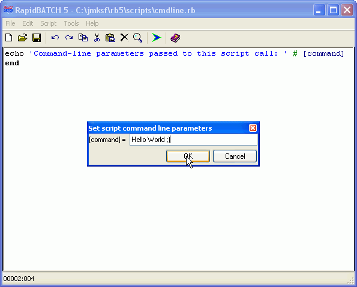
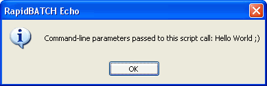

Using pre-declared variables
Maybe the chapter "system operations" is not the right place to discuss all pre-declared variables RapidBATCH provides, but many of the pre-declared variables are dealing with system-specific purposes. Until now, you had already learned some of the so called "pre-declated variables". Pre-declared variables are automatically created and filled by the interpreter at the start-up of each script that is executed. Some of the pre-declared variables can be changed, others are directly evaluated when they are called.
In this chapter, I don't want to discuss all, system-specific variables RapidBATCH provides, but the most important ones. To get detailed information on every of the pre-declared variables RapidBATCH provides, take a look into the reference manual.
Oftenly it is required to pass parameters, for example options or processing informations to a program over its command-line call. This feature may not miss in RapidBATCH! The variable [command] contains all parameters which where passed on to the script file or compiled program at its start-up. If the script is executed by the interpreter, [command] contains all parameters that where specified behind the script's file name at the interpreter call (RBI32.EXE), in compiled scripts (stand-alone EXE-files), all parameters specified behind the exe-file's name can be determined from [command].
A good example is the following script. It simply outputs the content of [command] in a ECHO-messagebox. For testing and debugging purposes, the RapidBATCH Builder directly provides a function you can call over the "Script"-menu by choosing the menu item "Set [command]...". A dialog will open where you can enter any desired value that is assigned by RapidBATCH Builder to the script each time it is executed.
echo 'Command-line parameters passed to this script call: ' # [command]
end

The function "Set [command]..." is very useful to easily assign command-line parameters...

...with success!
Your script should handle with texts from the clipboard? By performing a simple assignment of a value to the variable [clipboard], the value can be made accessable to all applications the current user is running. By reading [clipboard], values other applications copied to the clipboard can be read and used within the script.
A simple example is the following script, that copies a value into the clipboard and directly demonstrates its use in a Notepad editor, by pasting it remotely.
rem show me the current content of the clipboard
echo 'Currently in the clipboard: ' # [clipboard]
rem let's write a "Hello World" into the clipboard!
[clipboard] = 'Hello World by RapidBATCH'
echo 'New content of the clipboard: ' # [clipboard]
rem demonstrating the clipboard's content in Notepad
shell [windir] # '\notepad.exe', 'show'
wait '500'
sendkeys [active_window]: 'The current content of the clipboard is: #271v#017'
end
And there you can also find the next, pre-declared variable in the above script: [active_window]! [active_window] contains the title bar's text of the currently activated window, so in the above case it will contain "Untitled - Notepad". The advantage of this variable is, that the script can be run language idependend. For example, in the german version of Windows XP, Notepad's title is "Unbenannt - Editor" instead of "Untitled - Notepad".
Next to [active_window], the above script uses the variable [windir], containing the path to the Windows system directory, where notepad.exe is stored to.
Reading the system date and system time is also no problem for RapidBATCH. The following script displays a clock, showing the current date and time, using the INFOBOX dialog. The clock will appear for 10 seconds until the script stops, and shows its informations to the second.
[i] = '0'
repeat
[i] + '1'
infobox 'It is ' # [time] # ' on ' # [month] # '/' # [day] # '.' # [year], 'show'
wait '1000'
until [i] = '10'
end
The variable [time] contains the current time and is updated with the current system time always when it is called. The format [time] uses is "HH:MM:SS", for example "13:37:45". The date information has been explicitly splitted to three variables: [day], [month] and [year]. This has been done for a fast date formatting, because RapidBATCH is an internationally provided product, and its scripts should be easily written for optimal language customization. For example, here in Germany, we write dates in the format "DD.MM.YYYY", in western countries it is "MM/DD/YYYY" or another formatting. So the division into three variables is the best possibility for a fast and completely individual date output formatting.
The current time and date within an INFOBOX-dialog.
Oftenly it is also required to output special characters to files or even into messagebox-windows or dialogs. For this purpose, there had been five special character variables implemented which are the time-safing alternative instead of getting and building these values using the GETCHR-function with the particular ASCII-character codes. First of all, there is the [new_line]-variable. It contains a single line break (character code 10) and can be used both for files and for dialog outputs. On Windows operating systems, there is also a special line break used within files (e.g. text files) that is called Carriage Return/Line Feed (character codes 13 and 10). These two names, carriage return and line feed, are relicts from the stone age of the computer, where data and program output was primarily outputted to printers. There, a carriage return with a trailing line feed character was necessary to generate a line break. On Unix-based systems, the single line break as provided by [new_line] is the default, on Windows-like systems it is carriage return and line feed, that is provieded by the variable [crlf].
Next to [new_line] and [crlf], RapidBATCH provides the variable [tab] that contains a tabulator character as well as the variable [pipe], containing a pipe-character (|) that is primarily used as RapidBATCH default list separator at LISTBOX or PUTFILE, and many other functions and instructions. The last variable, [quot], contains the single quotation character (') that is used in the RapidBATCH script-code to separate strings. Using [quot], it can be displayed and saved into strings.
rem line breaks
echo 'This is a' # [new_line] # 'line break using' # [crlf] # 'two methods'
rem tabulators
echo 'It is a ' # [tab] # 'tabulator!'
rem pipe-character
echo 'The as ' # [std_sep] # ' defined character is a ' # [pipe] # ' by default'
rem quotation mark
echo 'That' # [quot] # 's it!'
Also known from the previous chapters is the variable [errorcode], which mostly receives the value '0' for "true" or "operation succeeded" or '-1' for "false" or "operation failed" (the only exceptions are the instructions SHELL and CALL, returning the program's PID at success instead of '0'). To verify this value in a more professional and dynamic way, there had been introduced the variables [true] (containing a '0') and [false] (containing a '-1') to be verified within an [errorcode] examination-condition. By using these variables, you also contribute for a better code readability.
chdir 'C:\test'
if [errorcode] = [false]
echo 'Error, not able to change directory!'
else
echo 'The directory change succeeded!'
endif
In the end of this chapter I want to discuss a variable that does, in the truest sense of the word, nothing: [null]! This variable has for example the purpose to catch return-values of functions (mostly self-implemented functions) that are not needed or to assign an emptystring instead of specifying "''" to a procedure, instruction or function. The advantage is, that the use of this variable for parameters or return values that are not needed is directly caught, and superfluous memory resources are saved.
Copyright © 2000-2006 by J.M.K S.F. Software Technologies, Jan Max Meyer
All rights reserved.